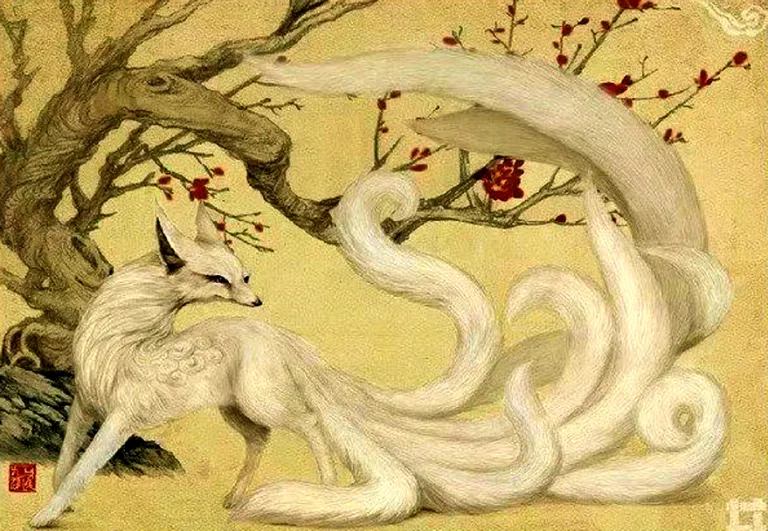

The Legendary Nine-Tailed Fox of Korean and Chinese Mythology
Kumiho
The Kumiho (구미호), also spelled "Gumiho," is a prominent figure in Korean and Chinese folklore, often portrayed as a malevolent spirit with a complex and multifaceted nature. Similar to the Chinese Huli Jing and Japanese Kitsune, the Kumiho is a mythical nine-tailed fox known for its shape-shifting abilities and devious behavior. However, unlike its counterparts, the Kumiho is predominantly viewed as a dangerous and predatory being. Let's delve into its characteristics, powers, and the rich mythology that surrounds it.
Appearance
In its true form, the Kumiho is described as a beautiful white fox with nine tails, each tail representing a century it has lived, as the creature is believed to be incredibly ancient. Some stories depict it as being larger than normal foxes, its physical form exuding an eerie and ethereal aura.
More often, the Kumiho is known for its ability to transform into a human, most commonly a stunningly beautiful woman. This guise is typically used to seduce and deceive humans, though some legends mention the Kumiho assuming other forms, such as young men or other animals, depending on the situation. Even in human form, certain traits—like glowing eyes or the inability to fully hide its tails—can sometimes give away its true identity.
Abilities
The Kumiho is endowed with numerous supernatural powers:
- Shape-shifting: The most iconic ability of the Kumiho is its power to transform into a human being. This skill is integral to its survival and its predatory nature.
- Superhuman strength and agility: As a fox spirit, the Kumiho possesses heightened physical abilities, allowing it to move with unnatural speed and grace.
- Seduction and manipulation: The Kumiho is often a master of charm and illusion, luring its victims into a false sense of security before striking.
- Soul extraction: According to many stories, the Kumiho consumes the livers or hearts of humans to gain power or to maintain its immortality.
- Immortality and enhanced longevity: The Kumiho is ageless and can live for a thousand years or more, often becoming wiser and more powerful with age.
Behavior
The Kumiho is frequently depicted as a malevolent trickster. Unlike other fox spirits in East Asian mythology, which can have both good and evil characteristics, the Kumiho in Korean and Chinese lore is typically portrayed as a dangerous predator. It uses deception and seduction to lure humans, often with the goal of consuming their flesh or stealing their life essence.
However, not all legends depict the Kumiho as wholly evil. In some tales, the Kumiho is a tragic figure, a fox spirit that yearns to become human. To achieve this, it must refrain from consuming human flesh for a thousand years. Failure often results in the Kumiho's reversion to its predatory ways, but a few rare stories tell of Kumihos that succeed in becoming human, often through acts of genuine love or kindness.
Habitat
While the Kumiho is a mythical creature, its habitat is often linked to places where foxes dwell in Korea. In folklore, the Kumiho is said to live in dense forests, caves, or mountains, where it can hide its true nature and observe human settlements from a distance. It typically emerges under the cover of darkness, blending into the human world through its shape-shifting abilities.
The Kumiho is also sometimes depicted in relation to graveyards or isolated villages, feeding off the bodies of the deceased or preying on lonely travelers. In other stories, it may reside near water sources like rivers or lakes, further enhancing its mysterious and elusive nature.
Mythology
The origins of the Kumiho can be traced back to ancient Korean and Chinese shamanistic beliefs and the broader East Asian tradition of the fox spirit. Foxes were often associated with cunning, magic, and longevity, traits that influenced the development of the Kumiho myth.
In some stories, the Kumiho is a punished or cursed being—a fox that has lived for a thousand years but has failed to become a human due to its evil nature. In others, it may be a fox spirit trying to break free of its curse by achieving good deeds or resisting its darker urges.
A recurring theme in Kumiho mythology is transformation. Some tales revolve around the Kumiho's desire to permanently become human. To do so, it must go through various trials, such as abstaining from its predatory nature or completing virtuous acts, though failure is often the norm in these stories, reinforcing the idea that a Kumiho's dark instincts are nearly impossible to suppress.
Weakness
Despite its great powers, the Kumiho has notable weaknesses:
- Vulnerability to magic and divine power: Like many supernatural beings, the Kumiho can be subdued or banished by shamanic rites or other forms of magic. Special charms or talismans may be used to reveal its true form or weaken it.
- Love or redemption: In rare tales, genuine acts of love or compassion can purify a Kumiho's spirit, allowing it to become human.
- Physical destruction: Though difficult to kill due to its supernatural resilience, the Kumiho is not invulnerable. A direct attack aimed at its heart or liver, especially using enchanted weapons or charms, can destroy it.
In some versions of the myth, the Kumiho's tail(s) are believed to hold its life force, and cutting them off renders the creature powerless.
Conclusion
The Kumiho remains a captivating and multifaceted figure in Korean and Chinese mythology. It embodies themes of deception, beauty, predation, and redemption, often reflecting human fears and desires. While predominantly feared, the Kumiho also serves as a reminder of the complexities of good and evil, and the fine line between monstrous and human.
Threat level
For human: 7/10
For other creatures: 6/10